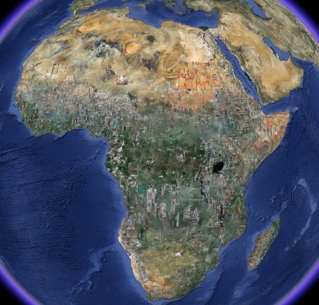
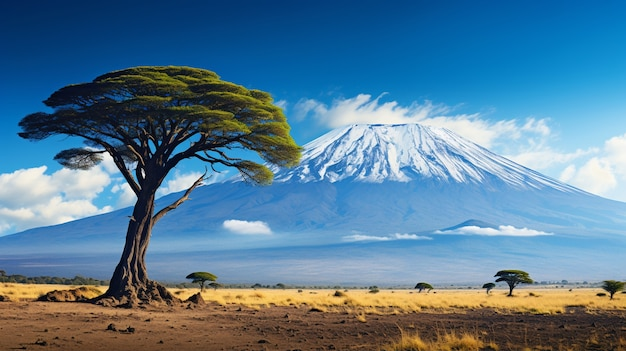

O continente Africano cobre uma área de cerca 30 milhões de quilômetros quadrados,um quinto da área terrestre da terra e possuí mais de 50 países.

Na imagem podemos ter uma visão ndo continente Africano visto do espaço,suas características geográficas são diversas e varião de tropical húmido ou floresta tropical
O monte Quilimanjaro com 5895 metros de altitude, está localizada na África Oriental na Tânzania e é a maior montanha de África permanece coberto de neve durante todo o ano
Deserto Saara localizado no norte de África,estende-se por vários países incluindo Argélia,Chade,Egito e outros. É o maior deserto mundo, cobrindo uma área de aproximadamnete 9 milhões de Quilômetros quadrados
.jpeg "foto de África mostrando a divisão dos países no continente AFRICANO")
.jpeg "Foto do pôr do Sol no Deserto do Saara")